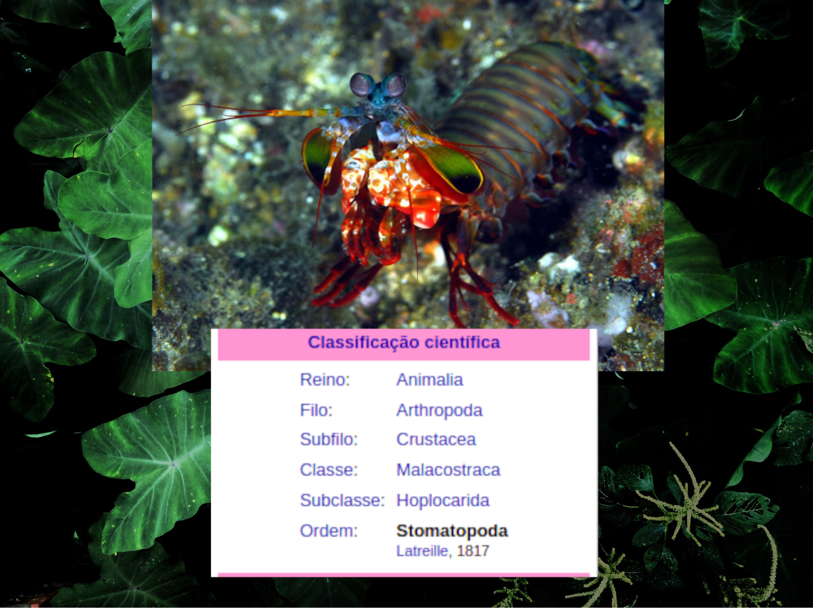
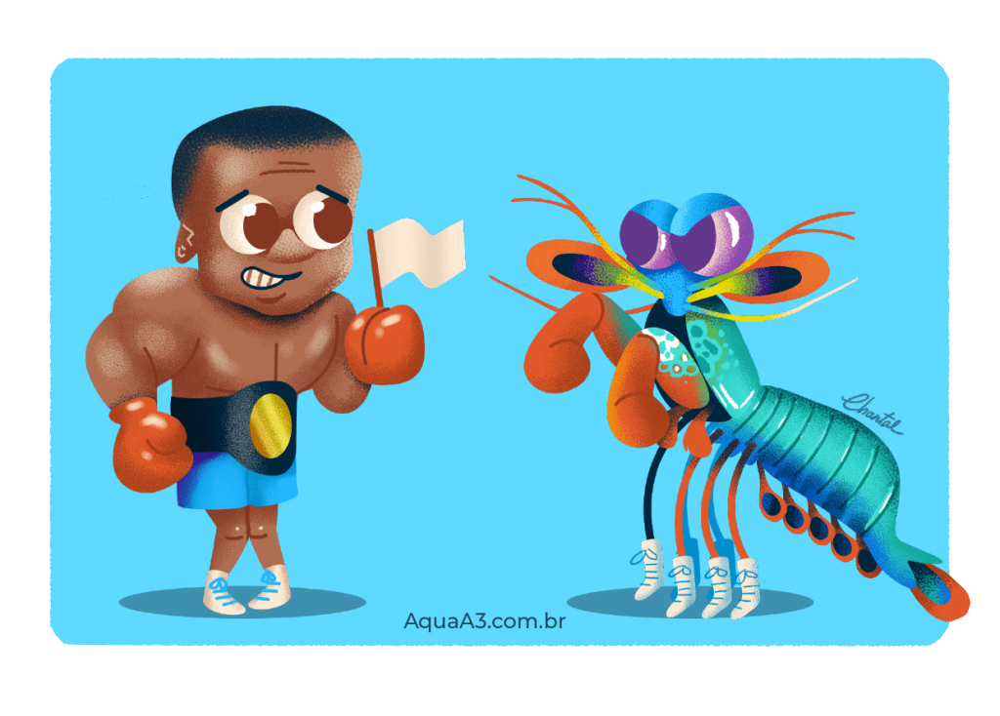
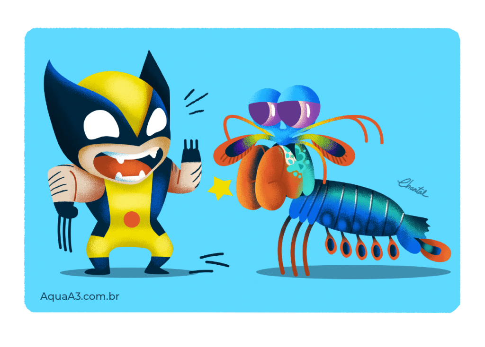

Fatos sobre o Stomatopoda
Informações gerais sobre Odontodactylus scyllarus

Fonte:https://pt.wikipedia.org/wiki/Stomatopoda, Ano:2022
Chamados popularmente de tamarutacas ou de lacraias-do-mar no Brasil, é uma ordem de crustáceos marinhos da subclasse Hoplocarida, que agrupa cerca de 400 espécies, caracterizadas principalmente pela morfologia da segunda pata torácica, que é modificada em apêndice subquelado, lembrando uma pata de louva-a-deus.
Os estomatópodes são predadores ativos que caçam presas com o auxílio de um sentido de visão muito apurado e capaz de interpretar polarização no espectro ultravioleta e infravermelho). Apresentam uma grande variação de tamanho, que pode ir de poucos milímetros até aproximadamente 40 cm nas espécies maiores. Eles vivem em fundo consolidado, lodoso ou ainda arenoso, onde cavam seus buracos ou aproveitam-se dos orifícios deixados por outros animais para neles se instalar. São animais exclusivamente carnívoros, alimentando-se de camarões, caranguejos, moluscos, peixes e até mesmo outros da mesma ordem. O segundo par de patas, muito desenvolvido, é usado tanto para atacar a presa como para se defender. O urópodo, quando aberto, também funciona para defesa, como um escudo, fechando a galeria em que o animal esteja instalado. A fêmea desova no local onde se abriga e, em caso de perigo, enrola os ovos como uma bola, prendendo-os junto ao corpo até encontrar um abrigo mais protegido.
O Soco potente do Stomatopoda !

Fonte:https://www.aquaa3.com.br/curiosidades-camarao-mantis/ , Ano:2022
Medindo cerca de 18 cm e habitando águas claras e rasas dos recifes, esse animal de colorido intenso é bastante apreciado no Aquarismo.,
Excelente golpeador, o tamarutaca "soca" suas presas com suas garras com uma força de até 2,5 mil vezes seu peso em menos de 800 microsegundos e velocidade de 80km/h . Este nocaute equivale a um tiro de pistola calibre 22.Isso porque, seus dois apêndices bem desenvolvidos (semelhantes a um martelo), chamados de Porretes de Dáctilo. faz com que quando ele espanca o animal, ele esmaga as suas presas em uma intensidade de aproximadamente 60 kg/cm² (daí o motivo de um de seus nomes ser lagosta-boxeadora).
Mais duro que o adamantium?

Fonte:https://www.aquaa3.com.br/curiosidades-camarao-mantis/ , Ano:2022
O bichindo é forte hein!,Devido a habilidades tão únicas, pesquisadores de diversas partes do planeta realizam estudos com o objetivo de entender o mecanismo da força de ataque e o motivo da resiliência do Camarão Mantis quanto ao forte impacto de ser tão forte quanto rapido, e isso não danificar sua estrutura corporal. Por não não existirem outros casos de mecanismos animais que criem uma intensidade de força (nem mesmo os músculos/tendões em outras espécies), cientistas da Universidade Tecnológica de Nanyang, na Singapura, publicaram um estudo na revista científica iScience sobre funcionamento dos “punhos” do Camarão Mantis.O link para esse estudo você encontra clincando aqui
Referências Bibliográficas
- Conheça os 5 superpoderes do camarão mantis.https://www.aquaa3.com.br/curiosidades-camarao-mantis/ .Acesso em 04 de março de 2022
- Stomatopoda.https://pt.wikipedia.org/wiki/Stomatopoda .Acesso em 04 de março de 2022
- Curiosidade animal: Habilidades do tamarutaca.https://www.bichonativo.com.br/post/2018/03/20/curiosidade-animal-habilidades-do-tamarutaca# .Acesso em 04 de março de 2022